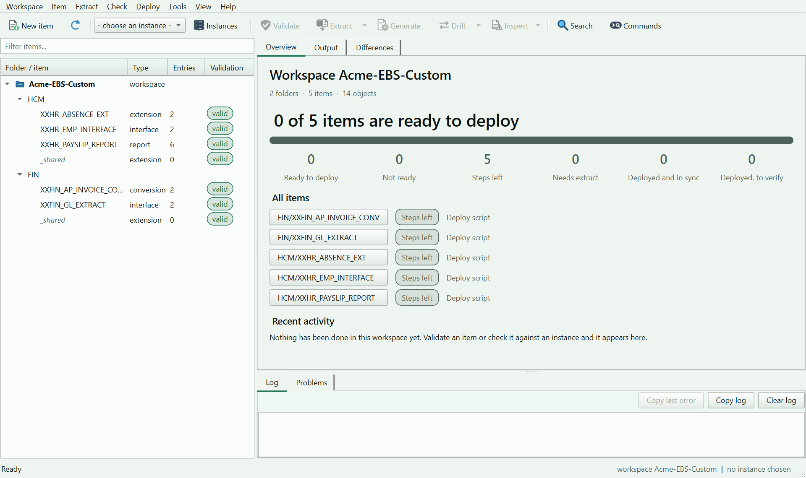
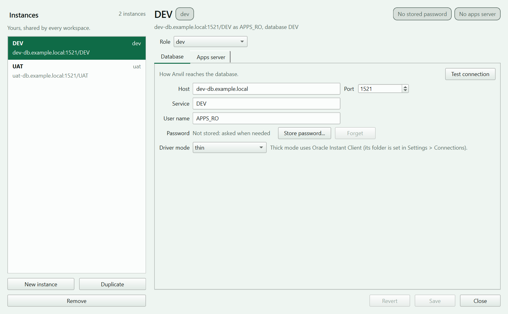
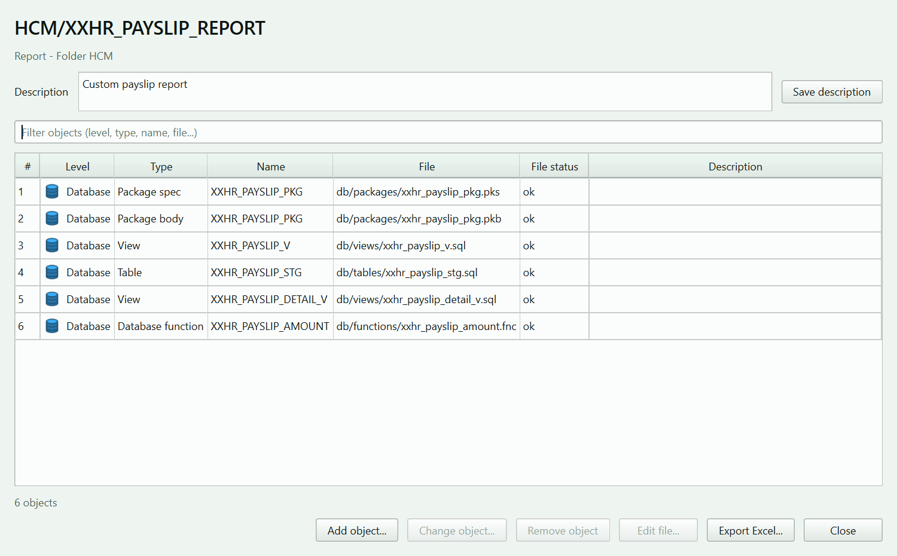
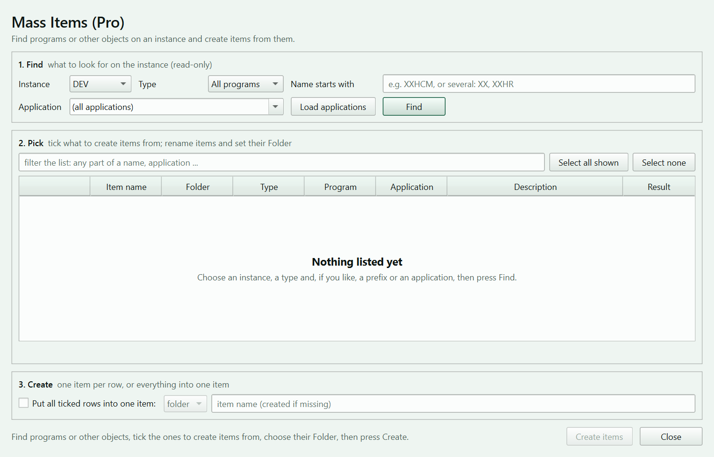
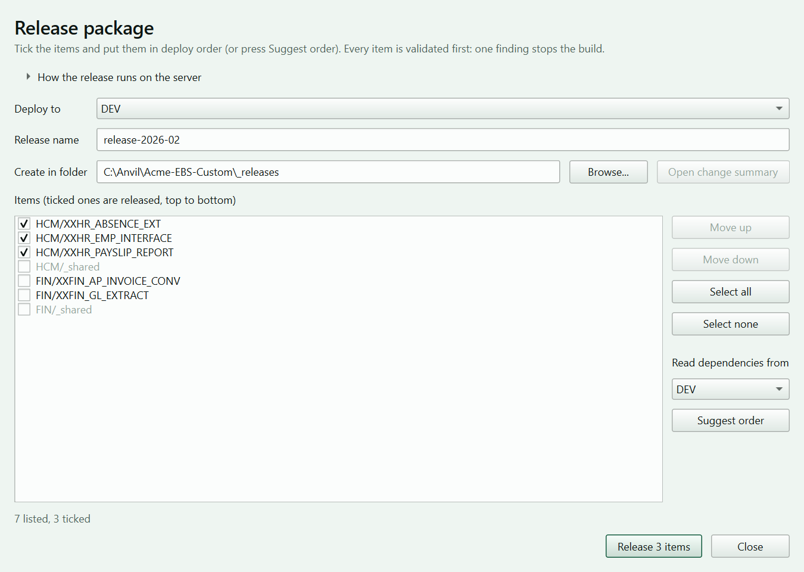

For Oracle E-Business Suite R12.2 · Windows
Oracle EBS custom code, from instance to a checked deploy.
Describe what you build, bring the real objects in from an instance, check them against your team's rules and generate the scripts that deploy them. Anvil then tells you whether an instance still matches.
Version 1.2.0 · 64-bit · free Standard edition · release notes

The main window with a demo workspace: folders and items on the left, what is ready to deploy on the right.
Ground rules
Anvil prepares and checks. A person stays in charge of every change.
- Reads, never writesAnvil only reads your database: it looks objects up and never changes them. The script you run makes the changes.
- Never runs a deployIt writes the deploy script; a person reads it and runs it on the apps server.
- One thing on the serverThe only script it runs on the apps server is the read-only extract, when you ask, after checking the server's key.
- No passwords in filesPasswords stay in Windows Credential Manager. Generated scripts ask for the APPS password without showing it.
- Nothing sent outNothing is sent to us or anyone else. The only outside call is the update check, and only when you ask.
How it works
Each deliverable is an Item: a folder with a short manifest that lists its objects. Anvil checks the manifest against your rules and writes the deploy script from it.
item: XXHR_PAYSLIP_REPORT folder: HCM type: report description: "Custom payslip report" objects: - type: package_spec name: XXHR_PAYSLIP_PKG schema: APPS file: db/packages/xxhr_payslip_pkg.pks - type: package_body name: XXHR_PAYSLIP_PKG schema: APPS file: db/packages/xxhr_payslip_pkg.pkb - type: table name: XXHR_PAYSLIP_STG schema: XXHR file: db/tables/xxhr_payslip_stg.sql # 3 more: two views and a function
You write it, or the item editor writes it for you.
Anvil deploy script for HCM/XXHR_PAYSLIP_REPORT on UAT, log: deploy_XXHR_PAYSLIP_REPORT_UAT_20261109_091502.log NLS_LANG: AMERICAN_AMERICA.AL32UTF8 [09:15:02] STEP: verify checksums Checksums verified. APPS password: [09:15:06] STEP: instance guard Database UAT confirmed. [09:15:07] STEP: online patching check No online patching cycle is open. [09:15:07] STEP: backup 110 table XXHR_PAYSLIP_STG ... one backup per object Backup written to backup/20261109_091502 [09:15:12] STEP: 110 table XXHR_PAYSLIP_STG [09:15:13] STEP: 120 view XXHR_PAYSLIP_DETAIL_V [09:15:13] STEP: 120 view XXHR_PAYSLIP_V [09:15:14] STEP: 130 package_spec XXHR_PAYSLIP_PKG [09:15:15] STEP: 140 package_body XXHR_PAYSLIP_PKG [09:15:16] STEP: 147 db_function XXHR_PAYSLIP_AMOUNT [09:15:17] STEP: invalid objects report no rows selected DEPLOY COMPLETED for HCM/XXHR_PAYSLIP_REPORT on UAT To undo this deploy: bash _generated/restore.sh backup/20261109_091502
Shortened, demo data. A script made for UAT stops on any other database before it changes anything, and a restore script is written beside it.
Workspace once
Make a workspace, then add a Folder for each functional area. It holds your work and your team's naming and checklist rules.
Instances once
Add your instances and test the connection. The password is kept in Windows Credential Manager.
Item per deliverable
Create an Item for each deliverable (a report, a package, an interface) and list its objects.
Extract read-only
Bring the real objects in from the instance, straight from your PC or from the apps server.
Validate and Drift read-only
Check the Item against your team's rules, and see whether an instance still matches what you have.
Deploy and verify you run it
Generate the deploy script, run it on the apps server, then register its log and let Anvil check the result.
Features
One program, two editions. Without a licence key Anvil is the Standard edition; a signed licence key switches on Pro.
| Feature | What it does | Standard | Pro |
|---|---|---|---|
| Every Item | |||
| Workspace and Items | Folders, Items and the item editor; Overview, Problems, side-by-side Differences and the command palette. | yes | yes |
| Instances | Define each database and apps server once; passwords in the credential store. | yes | yes |
| Extract | Database objects, concurrent programs, XML Publisher, workflow and OAF; on your PC or by the read-only extract over SSH. | yes | yes |
| Validate | Naming and prefix rules, and which Item owns each object. | yes | yes |
| Generate | Deploy and restore scripts for one Item, with checksums, backups and a fixed order; register the log afterwards. | yes | yes |
| Drift | One Item against one instance, on screen. | yes | yes |
| Inspect | Invalid objects, the online patching cycle check and Search. | yes | yes |
| Teams and releases | |||
| Mass Items | Find programs on an instance and create many Items in one go. | no | yes |
| Mass DB objects | Find database objects by type and prefix and add them to an Item, with their grants. | no | yes |
| Objects used by reports | The custom objects a report's queries and data templates use, for one Item or a whole Folder. | no | yes |
| Release package | Several Items in one release, in a suggested order, with a change summary for the approver. | no | yes |
| Compare and Refresh | Compare two instances; preview and take changes from an instance. | no | yes |
| Checks | Pre-deploy checklist, Verify queries and Dependencies. | no | yes |
| Reports | Drift reports as HTML and Excel, and the Summary report. | no | yes |
| Team tools | Your own item templates, Git, and settings backup and restore. | no | yes |
Getting Pro
Standard is free and stays free. Pro adds the features for teams and releases.
Licence key
Free for the first 3 months
The key is checked on your PC against a public key built into the program. The check is offline and nothing is sent anywhere.
- Request itFill in a short form: your team and the Pro features you need. No account needed.
- Get your keyWe reply by email within 1 working day with your licence key. The first 3 months are free.
- Switch it onIn Anvil, open Help > Licence and install the key. Pro switches on at once; nothing to reinstall, and your work stays as it is.
Screenshots
All screenshots use demo data. Click one to open it full size.




The tour, 58 seconds
The tour has no sound. Read what it shows
- Oracle EBS custom code lives everywhere: packages, views and grants in the database; programs, value sets and templates moved by loader files; deploys by hand, and no one sure UAT still matches DEV.
- Anvil is one program on your PC, with a window and a command line. Your code sits in folders, item by item, and there is no server to install.
- Six steps to a verified deploy: a workspace and its folders, your instances, extract the real objects, validate against your rules, generate the script and run it, register the log.
- The real objects, read-only: one SELECT at a time, definitions through DBMS_METADATA, programs and templates by a script you can run on the server when you ask.
- Anvil writes the script: objects deploy in dependency order, a script for UAT stops on DEV before any change, care during an online patching cycle, and a restore script beside every deploy.
- Many items, one move: a release package in a suggested order, a change summary for the approver, Mass Items and Mass DB objects.
- Safe by design. Anvil prepares and checks; you stay in control. Windows, Standard and Pro, Oracle EBS R12.2.
What's new in 1.2
Released 8 November 2026
- Clearer windows
- Plain forms, clear tabs, and buttons that say what they do.
- Passwords where you work
- See, change or forget a stored password in Instances.
- APEX applications
- Keep an exported APEX application in an Item, listed as a step you install by hand.
- Reports run by a PL/SQL procedure
- Its package, data definition and templates come along, in deploy order.
- Objects used by reports, whole Folder (Pro)
- Scan every Item of a Folder at once.
- Fast on large workspaces
- A refresh takes a moment, even with 1,000 Items.
- Safer to use
- No crash on close, and a lost connection stops a run cleanly.
Download
The Standard edition is free. A Pro licence key switches on the Pro features.
Download Anvil 1.2.0 for Windows
Windows 10/11 · 64-bit · free Standard edition · All versions and release notes
First run: Anvil is not code-signed yet, so Windows may say "Windows protected your PC". Click More info, then Run anyway. To check the download first, compare it with the SHA-256 checksums in the release notes.
Requirements
- Windows 10 or 11, 64-bit.
- Network access from your PC to the database.
- For a database that enforces Native Network Encryption: Oracle Instant Client, 64-bit.
- Optional: Git on your PC, for commits and the Git label.
- Optional: an SSH login to the apps server, to run Extract on the server.
Support
Pick what fits and fill in a short form. No account needed: it goes straight to us, and we reply by email.
- Report a problemSomething does not work as it should. Tell us the version, what you did and what happened.
- Suggest a featureAn idea that would make your EBS work easier. Describe the task behind it.
- Request a Pro licenceTell us about your team and the Pro features you need. We reply within 1 working day; the first 3 months are free.
Please leave out passwords, host names and customer data. Forms open in Google Forms. Have a GitHub account? Open an issue or see known issues.